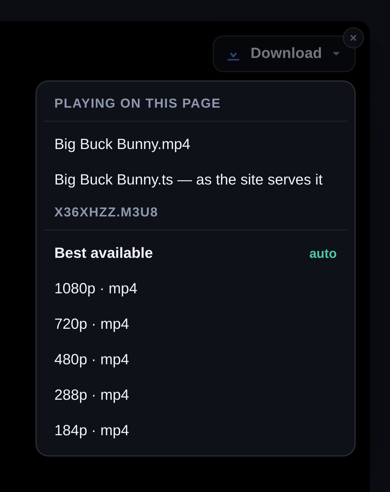
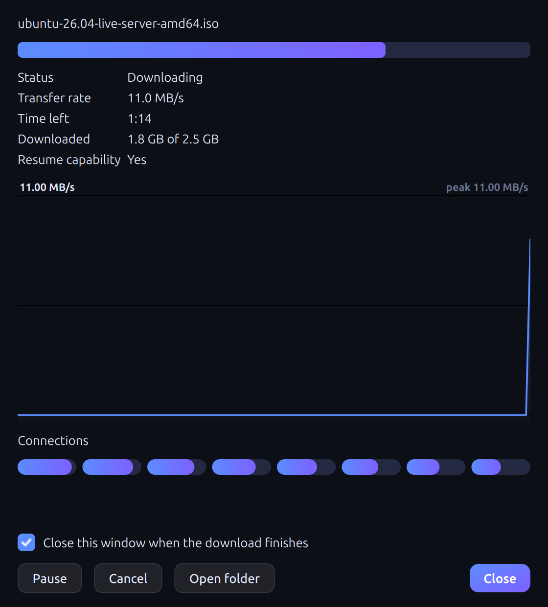
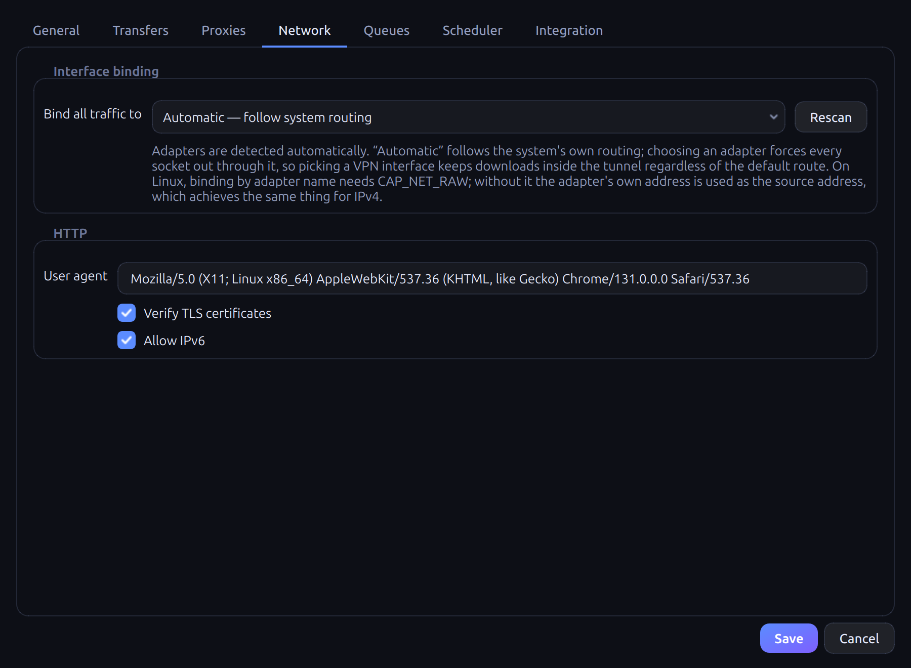
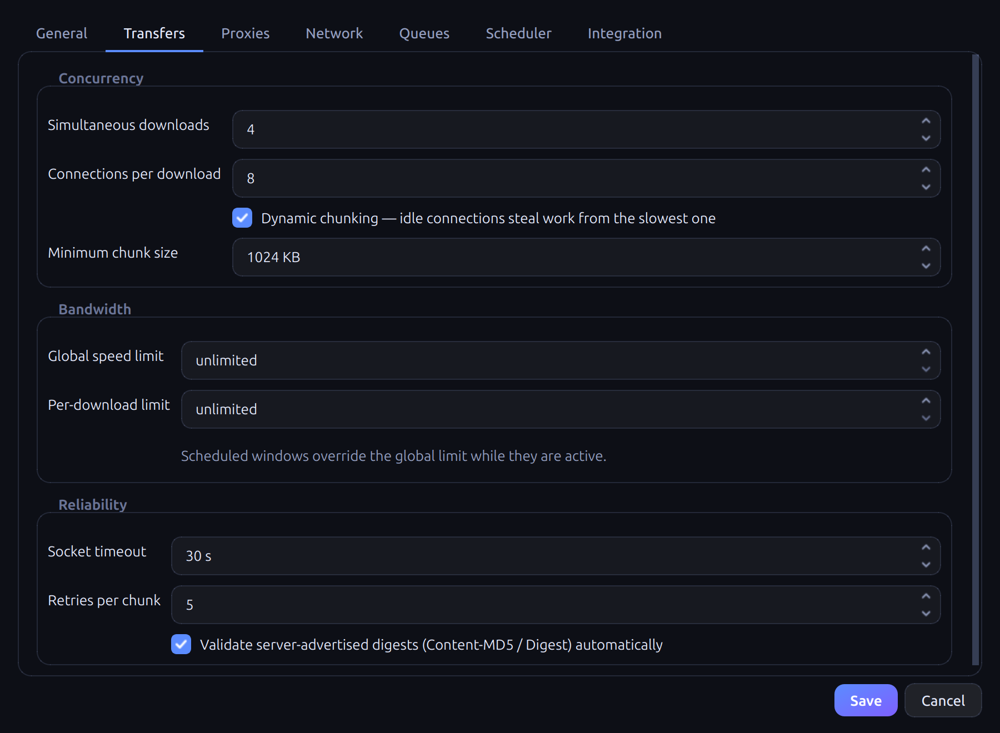

How it works
Four screens, one job
Start it, watch it finish, and know why when it does not.




Video and music, from wherever you are watching
The extension puts a panel on any page that is playing something and lists the qualities the site itself publishes — YouTube up to 2160p, Vimeo, and any site streaming HLS or DASH. Pick one and it is in the download list; above 1080p the video and audio arrive separately and are combined into one file.
Everything at once, and each chunk of it
Every transfer with its own progress, speed, ETA and integrity state. The bar is not an estimate: it is the chunks, drawn as they fill, so a download that has stalled looks different from one that is slow.
Open it and see the connections
Per-connection ranges, the speed history, the server's own digest checked against the file. A connection that finishes early takes work from the busiest one still running, so the end of a download is as parallel as the start.
Routed however you need it
HTTP, HTTPS and SOCKS5 with authentication, the system proxy followed automatically, a rotating pool, and traffic pinned to one interface regardless of the default route. All of it written here — nothing is delegated to curl.
Quiet by default
Categories, queues, speed limits, schedules and browser integration in one place. It registers the messaging bridge with every browser it finds on its own, so the extension connects the first time it is loaded.